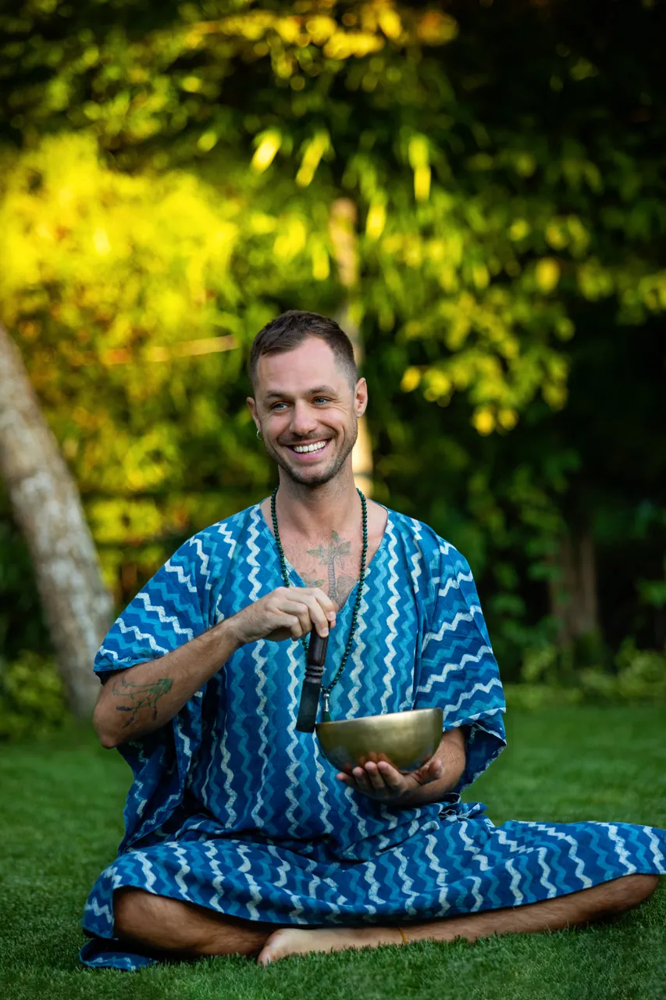

This is me.
My name is Péter Frák, also known as templeofsun. I am a holistic healer and soul alchemist with a rich and diverse background in spiritual and esoteric practices.
As a certified aromatherapist, Ayurvedic massage therapist, multidimensional energy worker, and practitioner of breath-work and meditation, my approach to healing blends ancient wisdom with contemporary techniques.
Namaste, welcome.
“My life's mission is to bring love, light, and transformation to those in need.”Péter Frák The practices
Two decades of dedication
Hungary · France · Sri Lanka · Bali · India · Portugal
My spiritual journey began at the age of fifteen, during a time when I struggled to find a sense of belonging. By chance I discovered a Reiki course, was initiated by my master, and began studying energy healing, aura reading and angel communication: the beginning of my exploration into the world of holistic healing.
Over the years I enriched my studies through transformative experiences in aromatic plant alchemy, massage therapy and Ayurveda across Sri Lanka, Bali and India. I earned my aromatherapy diploma in Hungary after two years of study and became a member of the International Federation of Aromatherapists in France. I trained as a rebirthing breath-work facilitator in Portugal, explored Vipassana in both the Goenka and Mahasi styles, and delved into traditional Tibetan Pranayama and meditation at a Buddhist centre.
Now, after two decades of dedication and personal growth, I integrate these diverse teachings into my own healing approach, and remain deeply committed to guiding and supporting souls on their path of healing.
Credentials
Trained across Hungary, France, India, Sri Lanka, Bali and Portugal, formalised the slow, honest way.
Aromatherapy Diploma
Panarom, Budapest · 2-year programmeMember, International Federation of Aromatherapists
IFA · ongoingAyurvedic & Marma-Abhyanga Massage
Mysore Ayurveda Academy, IndiaReiki practitioner & teacher
initiated at 15 · practising sinceRebirthing Breathwork Facilitator
trained in PortugalAlso studied and practised: Traditional Chinese Medicine, sound healing, Vipassana & Metta meditation, Pranayama, astrology and yoga.
The person behind the practice
The credentials are the map. The story is the territory: how a fifteen-year-old in a Hungarian garden became templeofsun.